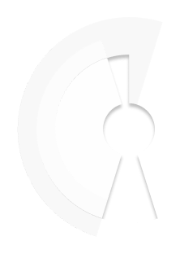
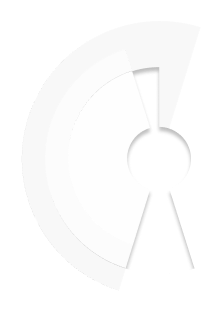

Crayon's Product Marketing Spotlight is an interview series where we chat with product marketers to get a glimpse into their careers and gain unique insight into product marketing strategy. In this edition of the Product Marketing Spotlight Series, we shine the light on Rowan Noronha, VP of Product Marketing and Revenue Enablement at Zix, and the Founder of Product Marketing Community.
Crayon's Product Marketing Spotlight is an interview series where we chat with product marketers to get a glimpse into their careers and gain unique insight into product marketing strategy. In this edition of the Product Marketing Spotlight Series, we shine the light on Rowan Noronha, VP of Product Marketing and Revenue Enablement at Zix, and the Founder of Product Marketing Community.
ED: Thanks for joining us, Rowan! I’d love to dive into a lot of product launch stuff today, but before we get started, do you mind telling me about your role at Zix?
RN: First off, thank you for your time Emily, big fan of your blog.
I currently hone my craft at Zix, a quarter-billion-dollar plus ARR SaaS provider for SMBs looking to build their secure, modern workplace.
At Zix, I am truly fortunate to lead a phenomenal group of professionals within three functions: portfolio marketing, content marketing, and revenue enablement. Our team does our part to attain Zix’s acquisition, retention, and expansion objectives by focusing on three imperatives: target, go-to-market, and enablement. We understand the given markets we choose to serve, turn those insights into stories and conversations that win, and finally enable the revenue engine to tell said stories in a consistent manner.
ED: Awesome! So, in addition to Zix, you also founded the ProductMarketingCommunity.co - Can you tell me a little bit about that community, and what sparked the idea behind it?
RN: After 15+ years in B2B marketing, skewed product marketing, I realized there wasn’t a place for product marketers to get together. There are loads of B2B marketing and content marketing conferences and forums, likewise for product managers, but nothing for my people at the time. As such, I founded the ProductMarketingCommunity.Co in 2016. After achieving 20k subscribers by way of our conferences, newsletters, and webinars, we decided to reimagine the community this year expressly for my peers, product marketing executives, or “Marchitects.”
In this new iteration, we are narrowing our focus to empowering product marketing executives and CMOs that own the function. We’ll continue to publish all the same thought leadership and ideas to our subscribers, but our events and roundtables will be geared exclusively toward VPs and CMOs.
We’re about to embark on a year-long journey of exploration into the five foundational pillars of product marketing to help Marchitects build winning teams, unite their business, and grow into their fullest expression of their executive self! I’m thrilled to have Meghan Keaney Anderson (VP Marketing, HubSpot) and Dave Daniels (former Pragmatic Institute instructor & exec) as our co-hosts, along with Megan Heuer (former VP Research SiriusDecisions) as our editor-in-chief alongside a rock-star team including Alan Trieu, Autum Molay, Bridget Weitman, and Abrar Ali.
ED: Awesome! I’ve loved seeing PMC grow over the years, and I can’t wait to see what you’re up to next.
Now, let’s change gears and dive into the hard-hitting product launch questions. What are the foundational steps to develop a repeatable and scalable launch discipline?
RN: Thanks for the great question and for including the word discipline. Your B2B product launch needs to be approached in a disciplined manner, as it represents significant financial and resource investment while prospectively contributing to your company's sustained growth. Stats from analysts and progressive GTM thought leaders such as OpenView Partners paint a grim picture for B2B product launches with 60%+ failing.
Your launch discipline defines the components required for an audience-centric approach to bring your solutions to the market. There are dozens of deliverables to be orchestrated, and a team of contributors aligned in their efforts. A successful launch sets the foundation for a product to achieve success in the marketplace, and it requires optimal orchestration both internally and externally.
The following foundational steps (each with a host of activities) cover the go-to-market deliverables to ensure your company's "commercial readiness." Please note your engineering and product teams may utilize a set of deliverables and efforts to ensure the "product readiness" state for your launch efforts.
Before you get started, determine whether your launch is major, minor, or a release. Establishing your launch tier will help to correlate activities to your launch objectives before you progress through the subsequent launch stages:
- Empower a launch captain (approved by the CRO, CMO, CPO), a cross-functional launch team, and 3rd party vendors (agencies) to lay the groundwork inclusive of schedule, milestones, roles and responsibilities, budget, metrics, etc. There are typically 15+ activities to determine whether the launch captain and team are ready to start planning the launch.
-
-
- Selecting your launch captain bears ultimate responsibility for your product launches success or failure. I believe this individual should represent your product marketing team as they understand the product, the differentiated position within the market you choose to serve, and competitors you decide to crush. Furthermore, as much as the product's user is the hero to your product management team, the buyer is the hero for the product marketing team – who better to lead the charge!
- Finally, personality, leadership acumen, and project management skills are paramount. Collectively herding the team, leading them to achieve their best work, conflict resolution, fostering collaboration, and executing with precision, are skills not for the faint of heart. As such, choose a well-rounded launch captain.
-
- Create the launch plan alongside product, sales, marketing, and executive sponsor(s) and brief all internal and external stakeholders. It takes approximately 40+ activities, including need/ problem analysis, TAM, buyer profile & propensity to buy, goals, budget, pricing, profitability analysis, messaging, market opportunity assessment, etc. to ensure a sound launch plan.
- Ensure your sales, marketing, and operational readiness by finalizing your customer acquisition deliverables. These include an additional 40+ activities, including user and buyer personas, competitive analysis, product training, solution-selling playbooks, compensation and incentive plans, channel and partner playbooks, collateral across the buyer's deciding journey, direct and channel communication plans, briefing and enabling 3rd party stakeholders, etc.
Finally, take the time to debrief after the launch, review your results, and document lessons learned. Debriefs are not a one-time affair. One should occur a week post-launch as some metrics are available. After that, ensure a monthly cadence to track progress towards your set measurable launch goals.
ED: That really lays out a solid foundation for product launches! Now, in your experience, what are some of the typical product launch challenges?
RN: As mentioned previously, stats from analysts and progressive GTM thought leaders such as OpenView Partners paint a grim picture for B2B product launches with 60%+ failing. Why? Well, in no particular order:
- No set goals for your product launch.
- Lack of adequate prep time – it takes 3-9 months on average to launch a product well, depending on the magnitude of the launch (major, minor, release), the maturity of the market, and the type of solution. Unrealistic timelines and expectations cast upon your launch captain ensure a failed launch. Evaluate launch goals against the ability of your company to execute.
- Delays in product development or commercial readiness hurt your company's momentum while creating credibility issues for the launch team and company. If sales lose credibility in the new product or it's availability, they'll quickly turn their attention to sure-fire products to meet their quotas. Ensure product development is developing only those features that drive business outcomes. Ensure adequate allotment of time to QA. Ensure there is no room for last-minute scope creep by executives, sales, etc.
- Lack of experienced launch personnel – not all product marketers make good launch captains the same way not all doctors make good neurosurgeons or cardiologists. There is something to be said about developing select product marketers to be specialized in product launches, i.e., your launch captains. Furthermore, adequate time defining the launch team and its charter is paramount to your launch success.
- Lack of formal launch processes, nor a single person (launch captain) responsible for driving product launch results.
- Noncompetitive pricing or costing.
- Launch planning decisions not founded on market evidence; lots of assumptions
- A launch strategy based on a set of deliverables from a launch checklist versus ensuring your launch goals dictate the strategy and, consequently, your deliverables.
- Missed market opportunities
- Lack of or inadequate sales enablement or training or content/ tools. Sales training is based on product features versus how and why your buyers buy. Further, lack of market dynamics and customer requirements education (WHY), before sharing the WHAT (product). Finally, marketing collateral that is not focused on the buyer and their unique deciding/ buying journey.
- Failure to meet customer requirements. Further, not adequately considering your existing customers into your launch plans.
- Product quality or supply problems
- Poor positioning and or messaging
- Resources being wasted! Your launch team isn't a team due to a lack of cross-functional collaboration and prioritization. (over communicate, and reward the team along the way)
- Product collateral and sales tools that buyers do not use.
At the end of the day, if you avoid these mistakes and provide the right product to the market at the right time, through the suitable routes to market, at the right price, targeting the right customer segment with a pertinent value proposition, you will achieve product launch success – it's that simple, ha!
ED: Now that we’ve discussed some challenges, let’s talk about measuring success. How do you measure the success of a B2B product launch? What metrics do you think are important to attribute to your launch?
RN: Ah, you are starting with the end in mind! I love it. Your launch plan should include a description of your metrics and a dashboard that you can use to gauge your launch progress and success. Rather than showcase a list of product launch metrics within your plan, allow your dashboard to "tell the story" of your product's performance.
First, get focused and ensure your priorities align with your corporate or business unit objectives. Focus and prioritization ensure you don't build a dashboard with a plethora of activity-based metrics versus a few outcome-oriented metrics that showcase the impact of your launch team's efforts.
Primary metrics you should focus on depending on your objectives:
- Growth – revenue and new deals, units sold, response rates, upgrade rate, migration/ legacy ratio, product feedback
- Adoption – attach rate, sales and support readiness, training completed, certification levels met, sales content usage, customer adoption
- Retention – retention rate trend, churn rate/ revenue,
- Position –the share of the market, win/ loss ratio, average account growth, feature trial, feature utilization, analyst mentions/ inclusions
- Efficiency – program cost per rep, campaign ROI, cost per SQL
You will want to track supporting metrics at a functional level, such as:
- pipeline conversion rates,
- pipeline velocity,
- trial response rates,
- pipeline volume,
- average deal size,
- influencer share of voice,
- registered deals for partners,
- sales generated leads,
- accepted lead to close ratio,
- trial response rate, etc.
Tracking your product launch across the revenue engine (sales, marketing, product) enables learning and improvement, but there's no universal set of best measures for all circumstances.
I must stress, the perception of launch success can be subjective if not defined cross-functionally and with your revenue engine leaders (CPO, CMO, CRO) from the get-go.
ED: Considering not all launches are created equal, how do you distinguish between the different types of product launches?
RN: Amen, not all product launches are created equal. Some, such as releases, require 1-3 months of effort; others, minor and major, require 6-9 months on average, respectively.
Major launches typically require more changes to existing processes and systems and are often the result of a new product, significant feature additions, or architectural changes. Major launches require more planning for product upgrades for existing customers; therefore, the launch captain could focus on a new product within an existing line, a new module, or a significant upgrade to a current product or an entirely new market entry in an adjacent market.
Minor launches pertain to an existing product and might include new functionality (with moderate impact on customers or the markets you serve), periodic product refresh or upgrade, current offer with new packaging or pricing, new service, a less significant upgrade.
ED: Most teams have many stakeholders involved in their launch process, with sales being the most important, but sometimes the least involved in pre-launch activities. How do you suggest PMMs get their sales team more engaged to benefit their launch?
RN: Executing a product launch without the full support of sales (pre & post-launch) is akin to going to a gunfight with a switch-blade. Not advisable!
Much like a new sales play or campaign, if your front-line sales leaders haven't been brought into the pre-launch process and had their voice heard regularly, they don't have skin in the game. Turning your attention to sales during the go-to-market enablement stage is far too late, which often leads to delayed revenue.
As such, you must:
- Ensure your launch captain has adequate sales coverage (sales exec ideal) on your launch team. This sales leader(s) will act as the voice of sales and ensure sales don't fall back to what's comfortable – selling what they already know to make quota. Therefore, obtaining support from sales leadership with a sales-specific launch plan and frequent updates is necessary. First, product and product marketing needs to keep things simple for sales – make the product easy to understand and easy to sell. Start with a 30-second elevator pitch that focuses on the new product's unique business outcomes for your sales team's customers. Arm them with brief conversation starters to showcase just how easy it is to get going in layman's language versus technical capabilities. Secondly, your sales leaders need to have a say in your sales enablement program – if they buy-in to the process, tools, and cadence, they will ensure their teams fall in line. (don't forget those essential pre-sales technical resources if you're selling a complex solution – they require nuanced material).
- If you take the time to incorporate sales early in your launch efforts, allow them to have a say, and provide for the following in your launch plans, they'll join the fight: product information, pricing rationale and analysis, value proposition, competitive differentiation, common uses cases to sell into, launch milestones, custom sales launch playbook.
- Provide the right carrot! Sales folks like a challenge, only when they get paid. Meet them head-on and ensure their compensation and quotas support the goals of the new product. Nothing worse than a sales rep's perception that they will receive inadequate or lower compensation from selling the new product; they will spread that perception, and now you have a morale issue. Assuming sales will push the new "cloud" offering because it's "better for their customer" to move off on-premise isn't going to get it done! Collaborate early with sales leaders and sales operations to ensure launch compensation and quota are frictionless. Confirm they do not cannibalize from the rep's bread and butter means of making money/ quota.
- Build a launch content advisory board. It's working wonders in my company as product marketing isn't the be all end all for messaging and content production. Of course, we own it, but we receive input as we develop and validate. Building and testing launch collateral and sales tools with sales ensure they're now confident in the tools as they've been pressure tested by their peers in the trenches. Secondly, seeing their input incorporated reinforces their stake in ensuring the success of the launch. Sales is our customer! We should do likewise with sales the same way we engage our customer advisory boards for their product roadmap input.
- Run a beta WITH sales teams (by company size, by industry, etc.) before a formal product launch. Typically beta's help product fine-tune the product. For our purposes, the beta also helps with sales readiness as we derive use cases that we didn't initially think through, which impact our value proposition, content, and sales process. The beta pilot will help you test and nuance sales enablement content to align with the actual buying process. Finally, the beta can help build "buzz" amongst sales.
ED: I agree, sales is key! Let’s discuss another sales element within product launches. For some companies, product marketing owns sales and company enablement. What types of enablement can those teams do to ensure product launch success?
RN: For me, revenue team enablement, not just sales enablement, is a crucial program that product marketing should own, or at the very least, provide guidance and input. Revenue enablement for a launch encompasses enabling the sales, marketing, channel, customer success, and leadership team.
The sales enablement portion of your launch plan defines the knowledge, skills, and programs required by direct and channel sales to adopt and sell the product successfully. Per my earlier response, ensure you enlist sales leaders and sales operations early to define sales content, training, and communication requirements – their buy-in ensures they have skin in the game. Sales leadership (esp front-line sales managers) should help inform which programs and incentives will motivate their troops to engage with buyers about the new product.
Enablement tactics will vary by sales hierarchy with front-line managers involved in pre-launch planning and buy-in sessions to being training kick-off champions, role-playing scenarios, driving certifications, deal war rooms, etc. At the same time, account execs will require playbooks, online training sessions, role playing, tele-prospecting scripts (more so for inside sales), competitive battlecard training, and constant communication and gamification.
Beyond sales, other revenue team members need to be enabled to represent the new product properly. Consider the various communication channels to address these folks (intranet, internal departmental blogs, internal communities, newsletters, team meetings), and the types of training per their functional contribution to the launch. (e.g., demand generation needs to be briefed thoroughly before developing acquisition campaigns, while customer success needs to know how to start "expansion" conversations, and support needs to be enabled on how to handle incoming customer inquiries via FAQs, scripts, knowledge videos, etc.)
ED: So, some teams have found that marketing invariably gets the blame if the product launch doesn't hit prescribed revenue targets. How should product marketers set the launch revenue targets and validate our sales team's forecasts?
RN: 1/3 of new product launches do not meet their revenue targets. Why? Combination of poor co-planning by sales and marketing, aggressive competition, changing buyer trends, in addition to being overly optimistic. Listen, I'm not saying to be pessimistic or conservative, but be realistic with your launch aspirations against your resources, budget, capabilities, as well as your market, competition, and buyer dynamics.
One way to improve your launch revenue target forecasts is to incorporate independent reviews from outside sources to ensure an objective, rigorous, and unbiased market perspective.
Your product marketing and product management teams (along with your market and competitive intelligence teams in larger companies) should collectively come to the table with quantitative assumptions. These include the number of prospects in the target market, the number of prospects your sales resources can engage with, the average length of a sales cycle, and their sales team's ability to convert prospects or existing customers, and average deal size. Within my company, channel partner sales, upsell conversion rates (especially for products with free trials), limited-time price discounts, existing revenue cannibalization, and other contributing factors need to be analyzed alongside your sales leaders.
However, despite all this analysis, teams struggle to take a realistic outside-in view on their forecasting process. The TAM/ SAM might be too large if you failed to segment down to the target buyers broken down by company size, industry, geo, job role, or persona. Your estimated conversion rate is always too high, or your sales cycle length too low (especially if the product is perceived as complex by your prospects).
As such, build in time to validate your forecasts and assumptions with objective 3rd party analysts, influencers, customer advisory boards, channel partners, and your peers.
These folks regularly speak with your buyers and potentially use your competitor's products, as such, allowing them to provide you with a complete picture of the market. Further, analysts are trained to develop forecasts, provide forecast assumptions, analyze hypotheses, and probe for flaws.
ED: One last product launch question for you. How can teams ensure adequate demand for their product launch?
RN: The cost of selling to a prospect is (typically five to ten times) more significant than the cost of selling to an existing customer. To that end, why do most product launch teams concentrate the majority of their efforts on prospects versus the low-hanging fruit – current loyal customers? Don't get me wrong; we all need to grow our business with new logos sustainably, but don't do so at the expense of retaining customers, upselling customers, and cross-selling customers.
Driving a pipeline of prospects by obtaining x net new MQLs by x date that result in x SQLs and $x in new opportunities is essential. A combination of inbound and outbound programs will help prospects with no prior experience with your company become aware of your corporate value proposition. If it resonates, they will enter your funnel to learn more about your offering via various campaigns and content assets that take them through the funnel. This process takes time to produce relevant leads.
In parallel, for those loyal customers that already have a relationship with your company, segment this group as a highly targeted and segmented contact list will help tailor the new offering. The more you know about your customers based on demographic data (product ownership, contacts, roles, responsibilities, campaign engagement history), behavioral and usage data (support requests, training history, product usage, intent info), and strategic data (advocacy history, their key metrics and corporate objectives), the more relevant the sales program and campaigns.
For each customer group, note the number of accounts and potential revenue. After that, utilizing predictive analytics apps like 6sense, Lattice, etc. uses internal and external data to identify specific products to upsell and cross-sell scored upon their likelihood to close. Based on this profile, allocate them into one of these ABM programs below:
- Upsell to increase wallet share by targeting an existing buyer at a customer account and getting them to upgrade.
- Cross-sell to expand the customer account by capturing new buyers in the existing account with your new offering.
- Retain target accounts in jeopardy and can be saved with this new product (cloud vs. on-prem) that addresses the current dissatisfaction.
- Win back lost accounts with your new product.
Make sure sales, marketing, finance/ accounting, and operations are on the same page as you classify accounts before utilizing ABM programs. (agreed-upon definitions for what defines an account and which accounts are key) This ensures accounts are not subject to multiple (and conflicting) campaigns.
Furthermore, product marketers need to ensure offers, tools, and content are nuanced and unique for these ABM programs versus generic launch materials for the market as a whole. Developing and delivering content that helps existing customers to understand the value in buying new or upgraded products is a must, especially for a 1-year-old customer versus a 5-year-old customer.
By getting a better view of current customer data, creating predictive models, employing ABM programs aligned to the account profile, and creating unique content and offers for existing customers, increases the likelihood of your product launch success versus weighting efforts to net new logo acquisition.

 

Answer a series of questions and we'll give you a custom list of high-priority CI best practices.

Related Blog Posts


Popular Posts
-
 How to Measure Product Launch Success: 12 KPIs You Should Be Tracking
How to Measure Product Launch Success: 12 KPIs You Should Be Tracking
-
 The 8 Free Market Research Tools and Resources You Need to Know
The 8 Free Market Research Tools and Resources You Need to Know
-
 How to Create a Competitive Matrix (Step-by-Step Guide With Examples + Free Templates)
How to Create a Competitive Matrix (Step-by-Step Guide With Examples + Free Templates)
-
 The Definitive Guide to Win/Loss Analysis: How to Gather, Analyze, and Act On Win/Loss Data
The Definitive Guide to Win/Loss Analysis: How to Gather, Analyze, and Act On Win/Loss Data
-
 5 Product Launch Examples That Are Worth Studying (+ Tips for Success)
5 Product Launch Examples That Are Worth Studying (+ Tips for Success)